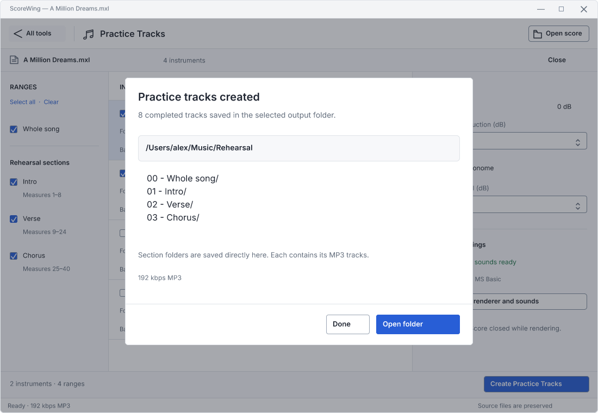
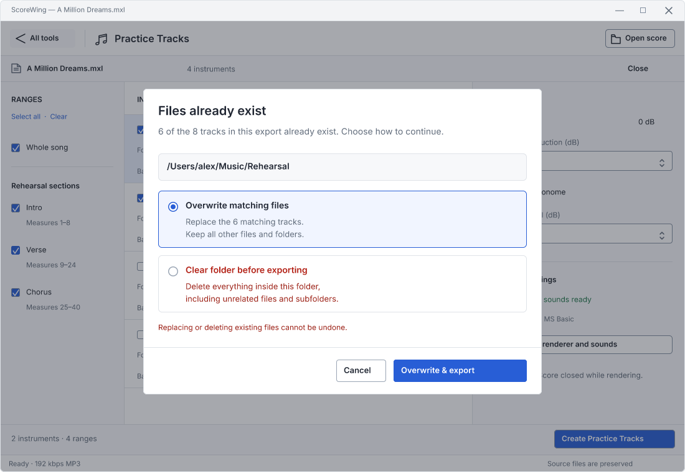
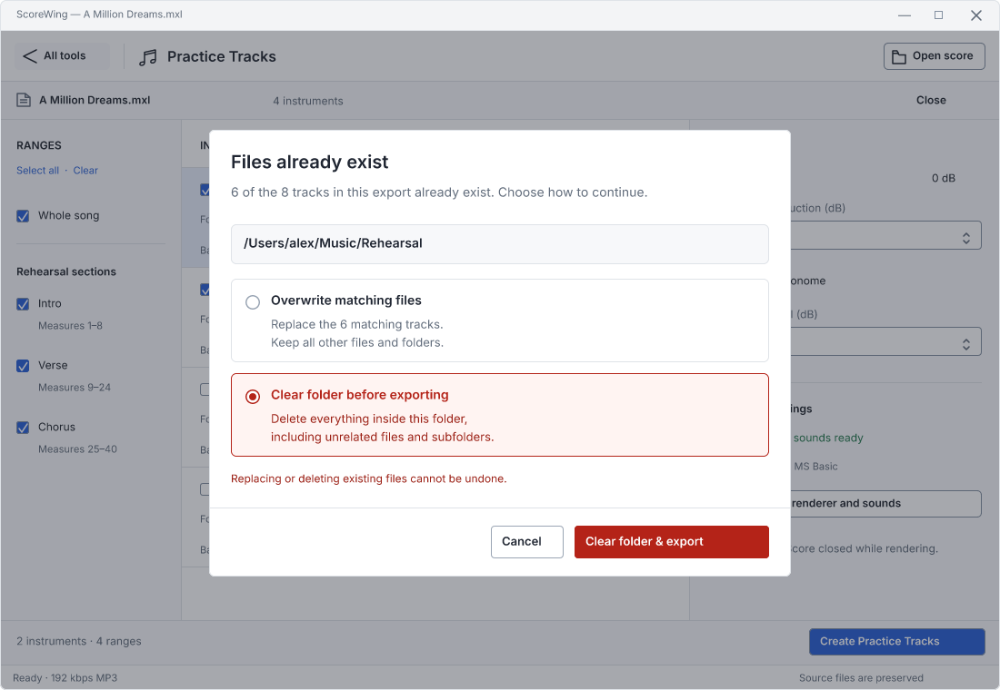

Approved design · implemented. Created in Figcraft using the existing ScoreWing design. Behavior and verification
Source filename plus -split, -merge, or -diff. Diff uses the newer score. Existing output formats remain available.

Whole-song and section folders are created immediately inside the selected output folder.

The modal appears only when export files would be replaced. Overwrite preserves all other contents; Cancel changes nothing.

Selecting clear changes the final action to a red Clear folder & export button. The warning explicitly includes unrelated files and subfolders.
